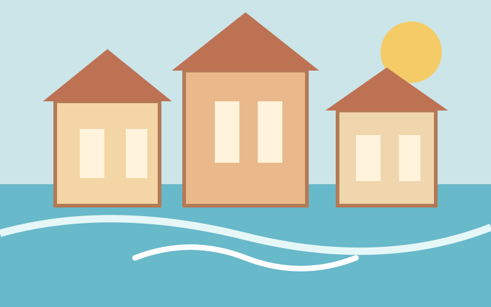
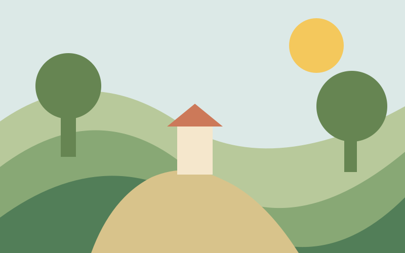

YOUR LITTLE ITALIAN ESCAPESay ciao to a
Say ciao to a
new adventure.
Learn Italian in a way that feels like a journey—not a chore. Discover useful words, friendly grammar, stories and little wins every day.
✦ Small steps. Real progress. La dolce vita.

☀
Buongiorno!Your Italian moment starts now.
ITALIA, CON AMORE01 / 05
✿
Learning Italian can be lovely.
Follow your curiosity, explore at your own pace, and let the language grow naturally.
A1A2B1B2C1+
YOUR LEARNING PLAYGROUND
Where would you like to go today?
Choose a path. Every activity is one step closer to speaking Italian.
 01
01BUILD YOUR FOUNDATION
Grammar lessons
Clear explanations, examples, and grammar that makes sense.
Explore lessons ↗ 02
02A LITTLE CHALLENGE
Practice & quizzes
Try a question, check yourself, and learn from mistakes.
Start practicing ↗
03WORDS TO REMEMBER
Vocabulary cards
Meet everyday Italian words, one card at a time.
Discover words ↗
04STORIES & CULTURE
Reading corner
Short stories, useful phrases, and a peek into Italian life.
Read a story ↗♫
LISTEN · REPEAT · FEEL
Listening room
Let your ears get familiar with the rhythm of Italian.
Listen now ↗↔
EXPLORE MEANING
Translation studio
Compare Italian and English and explore how ideas travel.
Translate a phrase ↗Un passo alla voltaOne step at a time.